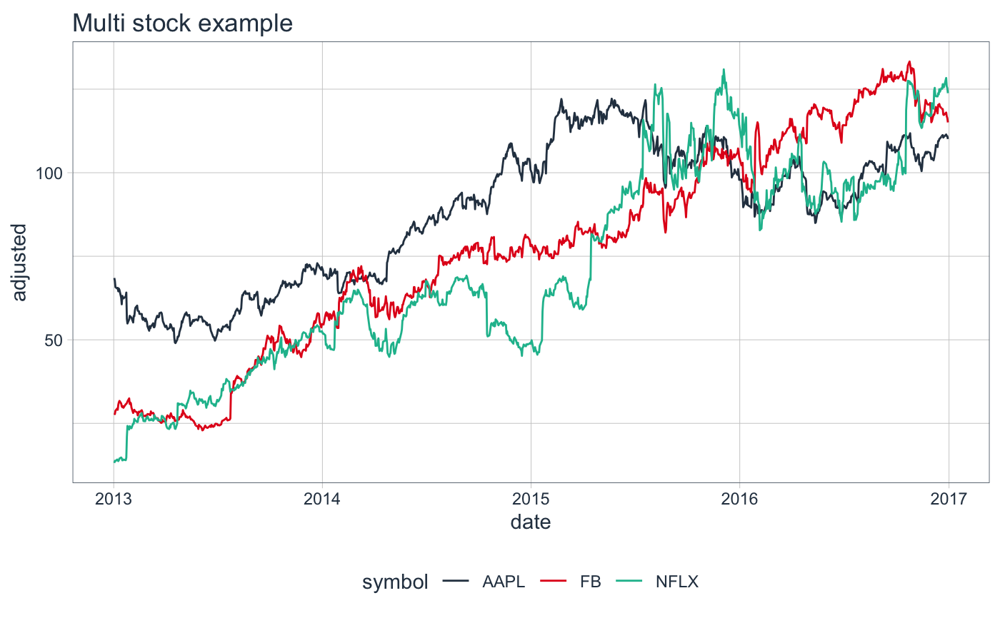

The tidyquant scales add colors that work nicely with theme_tq().
scale_color_tq(..., theme = "light") scale_colour_tq(..., theme = "light") scale_fill_tq(..., theme = "light")
| ... | common discrete scale parameters: |
|---|---|
| theme | one of "light", "dark", or "green". This should match the |
scale_color_tqFor use when color is specified as an aes() in a ggplot.
scale_fill_tqFor use when fill is specified as an aes() in a ggplot.
# Load libraries library(tidyquant) library(dplyr) library(ggplot2) # Get stock prices stocks <- c("AAPL", "FB", "NFLX") %>% tq_get(from = "2013-01-01", to = "2017-01-01") # Plot for stocks a <- stocks %>% ggplot(aes(date, adjusted, color = symbol)) + geom_line() + labs(title = "Multi stock example", xlab = "Date", ylab = "Adjusted Close") # Plot with tidyquant theme and colors a + theme_tq() + scale_color_tq()